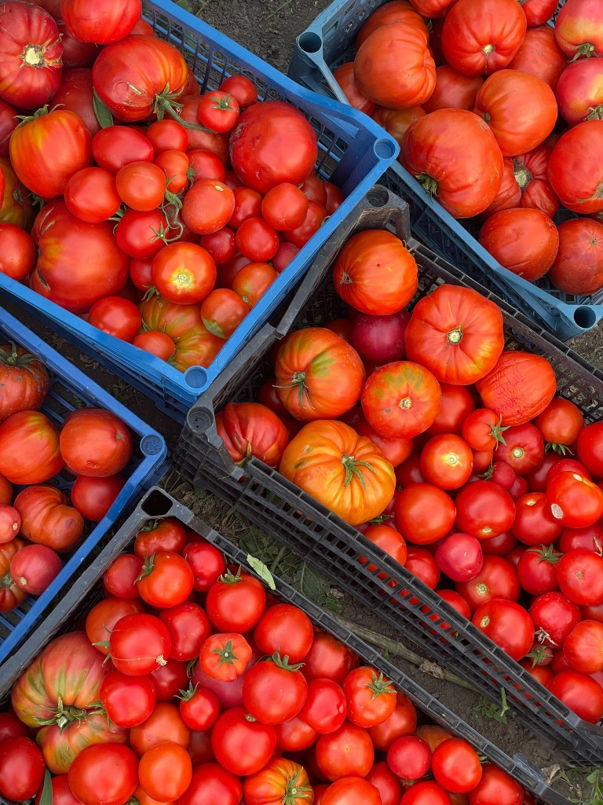
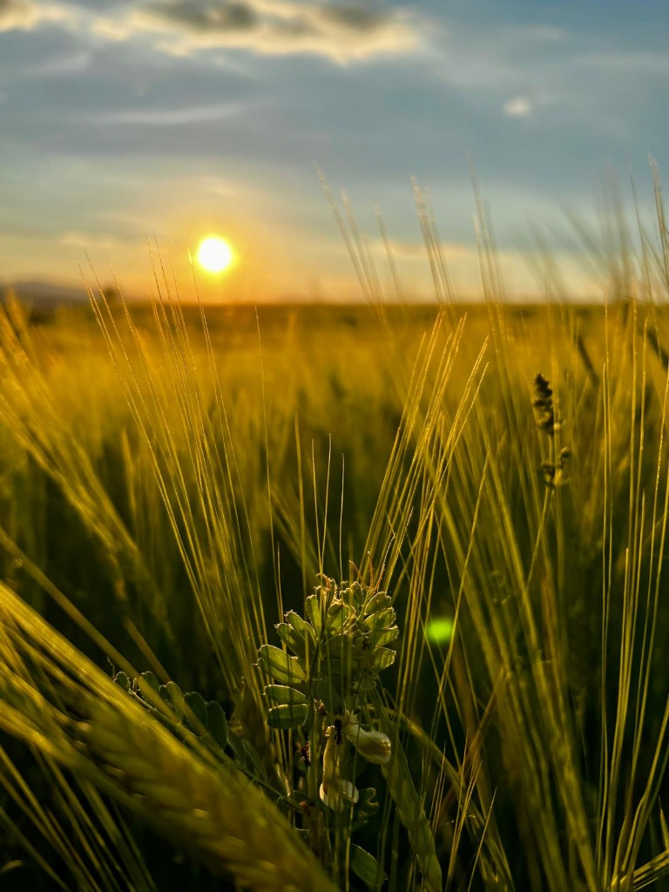
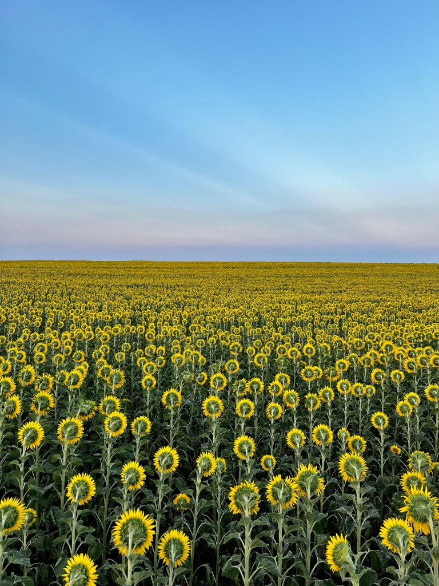
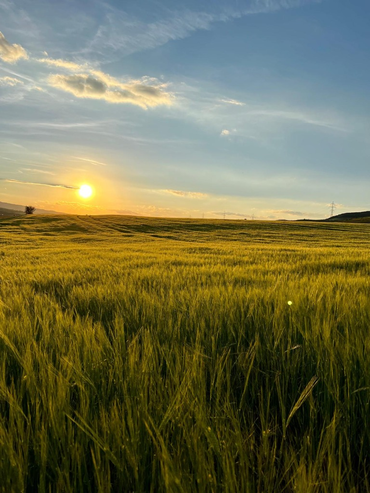

Afacere de familie
Legume cultivate aproape de casă, culese la momentul potrivit.
Suntem o mică fermă ce cultivă legume de sezon pe îndelete și le oferim proaspete oamenilor din comunitatea noastră.
Contactează-ne
Ce cultivăm
Cultivăm legume de calitate superioară, respectând standardele agricole și perioadele naturale de coacere. Produsele noastre principale includ:
Porumb zaharat
Cultivat din soiuri alese și recoltat la maturitatea optimă pentru a-și păstra frăgezimea și conținutul natural de zaharuri.
Fasole verde
Păstăi selecționate, recoltate fragede și sortate atent pentru a asigura o calitate superioară în preparatele culinare.
Roșii
Cultivate în sistem tradițional și coapte natural, recoltate la momentul potrivit pentru a garanta gustul autentic.
Ardei
Soiuri sănătoase, recoltate la maturitate plină, potrivite atât pentru consumul proaspăt, cât și pentru procesare.
Imagini de la fermă
Câteva cadre din gospodăria noastră.


